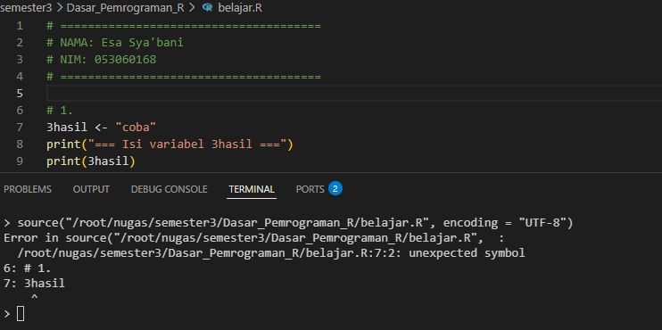
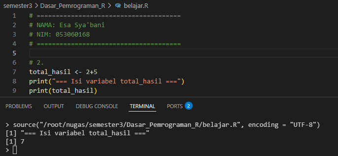
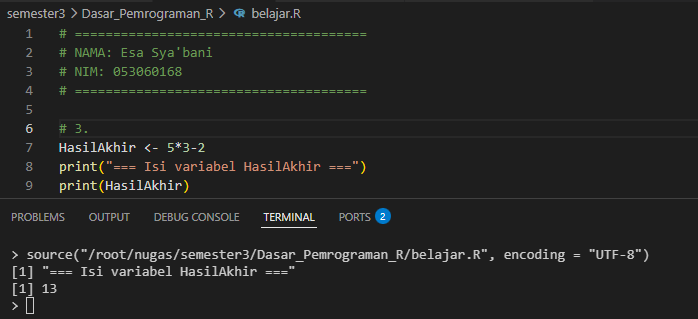
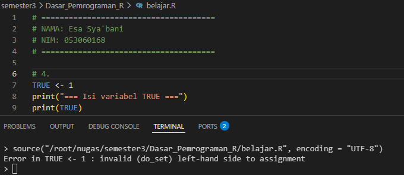
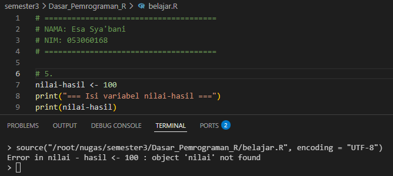
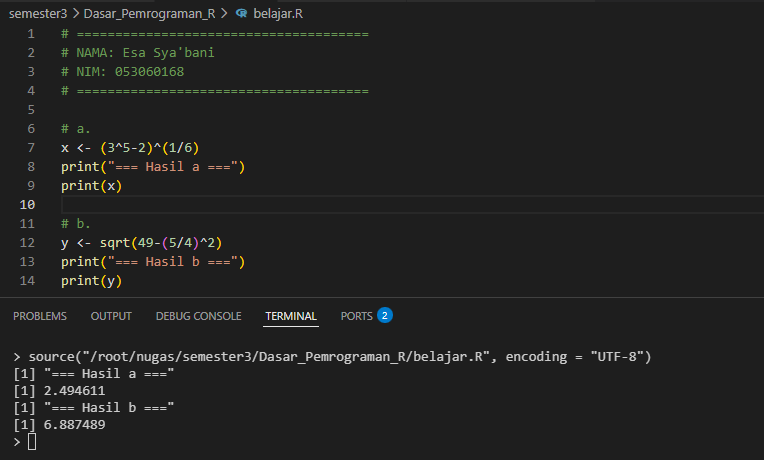
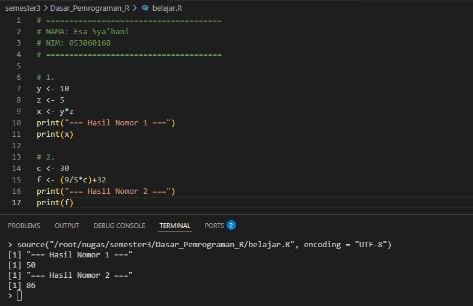

Assalamu'alaikum wr. wb., selamat malam, saya Esa Sya'bani asal UPBJJ Purwokerto prodi S1 sistem informasi izin merevisi jawaban saya sebelumnya. Izin saya menggunakan IDE VSCode, karena sudah lebih nyaman menggunakan VSCode
| No | Nama Variabel | Benar/Salah | Penjelasan |
|---|---|---|---|
| 1 | 3hasil |
Salah | Nama variabel tidak valid karena aturan penamaan objek dalam R mensyaratkan nama objek harus diawali dengan huruf (baik huruf kapital maupun huruf kecil). Tidak boleh diawali dengan angka. |
| 2 | total_hasil |
Benar | Nama variabel ini memenuhi aturan penamaan objek dalam R, yaitu diawali dengan huruf dan boleh diikuti oleh huruf, angka, titik, atau garis bawah. Nama variabel ini diawali dengan huruf kecil dan menggunakan garis bawah, sehingga memenuhi peraturan penamaan variabel/objek dalam R. |
| 3 | HasilAkhir |
Benar | Nama variabel ini diawali dan diikuti oleh huruf. Penamaan objek dalam R bersifat case sensitive, yang artinya huruf besar dan kecil diperlakukan berbeda, sehingga penggunaan format ini diperbolehkan. |
| 4 | TRUE |
Salah |
Karena TRUE masuk ke dalam kategori reserved word (boolean) dalam bahasa R yang tidak dapat digunakan untuk penamaan variabel.
|
| 5 | nilai-hasil |
Salah |
Simbol yang diperbolehkan untuk mengikuti huruf dalam nama objek/variabel hanyalah titik dan garis bawah. Tanda hubung/strip (-) merupakan operator dasar aritmetika dalam R yang digunakan untuk operasi pengurangan.
|
Lampiran
3hasil 
total_hasil 
HasilAkhir 
TRUE 
nilai-hasil 
x <- (3^5-2)^(1/6)
x : Variabel yang digunakan untuk menyimpan nilai sebagai objek pada memori.<- : Perintah pengisi nilai variabel.( ... ) : Tanda kurung yang berfungsi untuk menetapkan urutan perhitungan secara eksplisit. R akan memprioritaskan operasi di dalam kurung ini.^ : Operator aritmetika untuk operasi pemangkatan.- : Operator aritmetika untuk operasi pengurangan.1/6 : Menggunakan operator aritmetika (/) untuk pembagian. Bentuk ini digunakan sebagai nilai eksponen untuk mencari akar pangkat enam.y <- sqrt(49-(5/4)^2)
y : Variabel baru untuk menyimpan nilai objek hasil perhitungan.<- : Perintah pengisi nilai variabel.sqrt() : Fungsi aritmetik bawaan untuk menghitung nilai akar kuadrat.- : Operator aritmetika untuk operasi pengurangan.(5/4) : Menggunakan tanda kurung untuk menetapkan urutan perhitungan pembagian secara eksplisit menggunakan operator (/).^2 : Operator aritmetika untuk mengkuadratkan (memangkatkan 2) hasil pembagian sebelum dikurangkan dari 49.Lampiran

y <- 10
z <- 5
x <- y*z
y, z, dan x : Variabel yang digunakan untuk menyimpan nilai sebagai objek pada memori sistem.<- : Perintah pengisi nilai variabel.10 dan 5 : Nilai numerik awal yang ditetapkan ke dalam variabel.* : Operator aritmetika untuk melakukan operasi perkalian.c <- 30
f <- (9/5*c)+32
c dan f : Variabel untuk menyimpan nilai sebagai objek pada memori sistem.<- : Perintah pengisi nilai variabel.( ... ) : Tanda kurung yang berfungsi untuk menetapkan urutan perhitungan secara eksplisit. Operasi di dalam kurung akan diselesaikan lebih dahulu./ : Operator aritmetika division untuk melakukan operasi pembagian.* : Operator aritmetika untuk melakukan operasi perkalian.+ : Operator aritmetika addition untuk melakukan operasi penjumlahan.Lampiran
